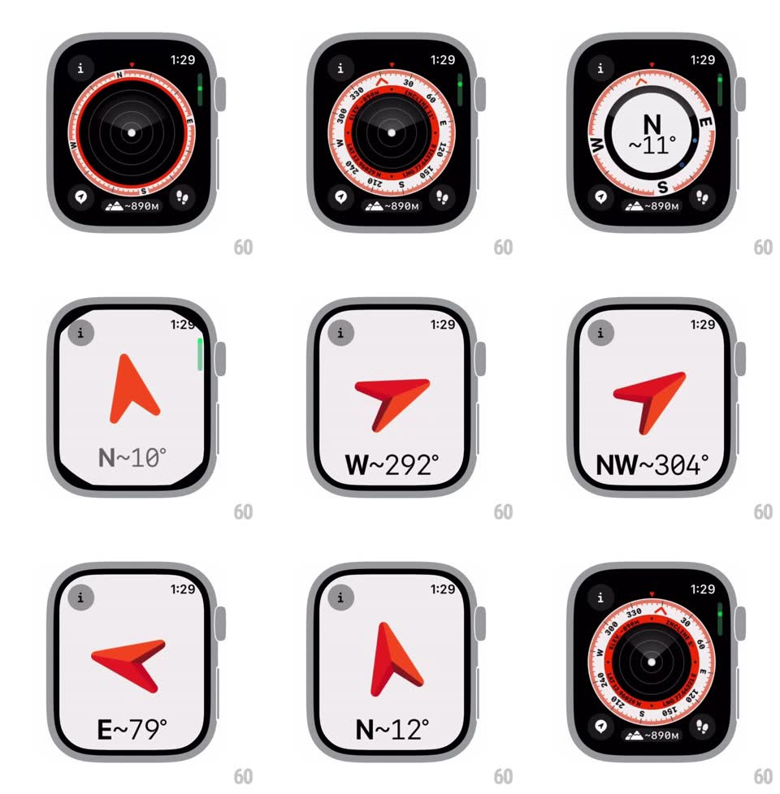

Media
Frame-by-frame

Rebuild this interaction 1:1: the watchOS Compass's view morphs - a detailed data dial (degree ring, cardinal letters, elevation pill) rotates live with heading, then morphs into a simplified "N ~11°" card, then into a minimal 3D red arrow that swings with the gyro, and back.

Rebuild this interaction 1:1: the watchOS Compass's view morphs - a detailed data dial (degree ring, cardinal letters, elevation pill) rotates live with heading, then morphs into a simplified "N ~11°" card, then into a minimal 3D red arrow that swings with the gyro, and back.
## Integration
Integration: stack-agnostic spec - springs given as stiffness/damping, timed motions as duration + curve; map every value to your framework and animation library of choice.
## Scene
Watch screens: (1) dark compass dial - red/white degree ring with numbers and N/E/S/W letters, center dot, "~890M" elevation pill, corner info/location/backtrack buttons; (2) simplified dark card - big "N ~11°" inside a thin ring; (3) light card - a 3D folded red arrow above "N~354°" style readouts.
## Motion spec
Pattern: live heading dial + view morphing.
- Detailed view: the degree ring rotates opposite the heading (smoothed, ~150ms low-pass) so N always points true; the red heading marker at top stays fixed; tick marks and numbers stay glued to the ring.
- Crown or tap cycles views with a shared-element morph: the degree ring shrinks into the simplified thin ring (spring ~280/24, ~450ms) while chrome (elevation pill, corner buttons) fades out; the heading letters crossfade to the big readout.
- Arrow view: background flips dark -> light (300ms crossfade), the ring collapses into a dot and the red 3D arrow unfolds from it (fold-open rotateX, spring ~260/20, ~500ms); the arrow rotates smoothly with heading (same smoothing) and tilts in 3D with pitch.
- The degree readout under the arrow counts/interpolates continuously ("N~354deg" -> "NE~36deg") with the cardinal label snapping at its 8-wind boundaries.
- Morphing back reverses the exact sequence.
## Calibration
- Ring rotation, letter positions, and arrow angle all derive from one heading value - never animated independently.
- View changes are interruptible mid-morph.
## Reduced motion
Views crossfade; the arrow rotates without the unfold animation.
## Don't miss
- The red heading triangle at 12 o'clock is screen-fixed; the ring moves under it.
- The arrow view keeps the small info button top-left and time top-right - chrome survives the morph.